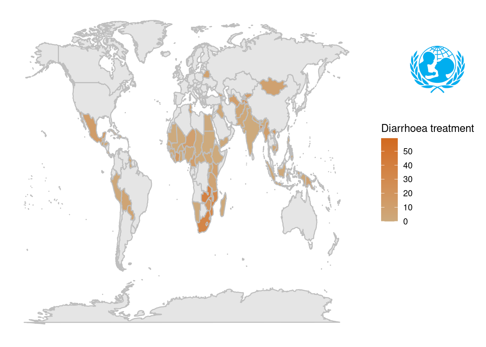
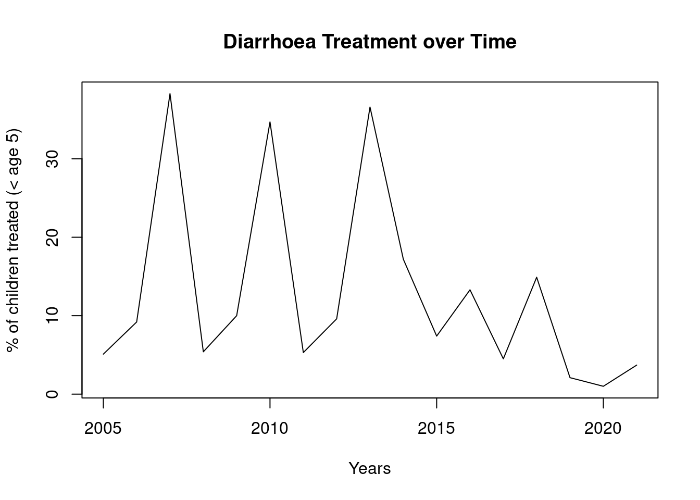
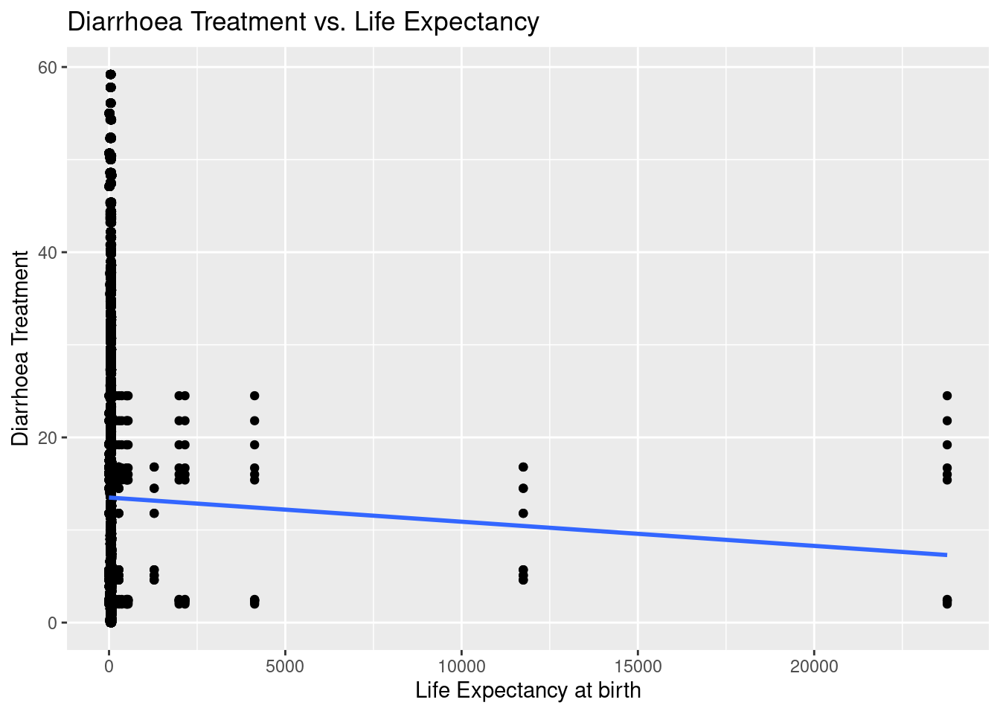

Assignment 2: Quarto Report
MT5000: Data Analytics & Visualisation
Diarrhoea: a disease of inequity that impacts young children
According to UNICEF, the disease accounts for approximately 9% of all deaths among children under age 5 worldwide in 2019.
Third-world countries lack diarrhoea treatments
Percentage of children (under age 5) with diarrhoea who received treatment (zinc).
The access to treatment is not linear and it remains insufficient

The recommended treatment is fairly simple: - oral hydration (with the aid of oral rehydration tablets, ORS) - continued feeding - zinc supplements
Evolution of the treatment of diarrhoea by country
There is no observed correlation between the treatment of diarrhoea and life expectancy

Protective interventions provide the foundations for keeping children healthy and free of disease
- Exclusive breastfeeding:
- Meaning no other foods or liquids, even water for the first 6 months of a newborn’s life.
- This protects the child against infections and provides the perfect nutrition at that age.
- Complementary feeding along with breastfeeding:
- Adequate complementary feeding (providing children with safe, nutritious and age-appropriate foods in sufficient quantities and continued breastfeeding) from 6 months to 2 years of age.
- Vitamin A supplements:
- High-doses of vitamin A supplementation can strengthen immune systems and reduce cases of diarrhoea by 15%.
Preventative interventions help stop disease transmission and keep children from becoming ill
- Immunity:
- Rotavirus vaccines offer protection against one of the leading causes of infant mortality from diarrhoea.
- Hygiene, sanitation and safe drinking water:
- Nearly 60% of diarrheal disease deaths worldwide are caused by unsafe drinking water and inadequate sanitation. Simply washing your hands with soap can reduce your risk of diarrhoea by at least 40% and significantly reduce your risk of respiratory infections.

To fight the good fight and learn more about this disease, visit the unicef website.